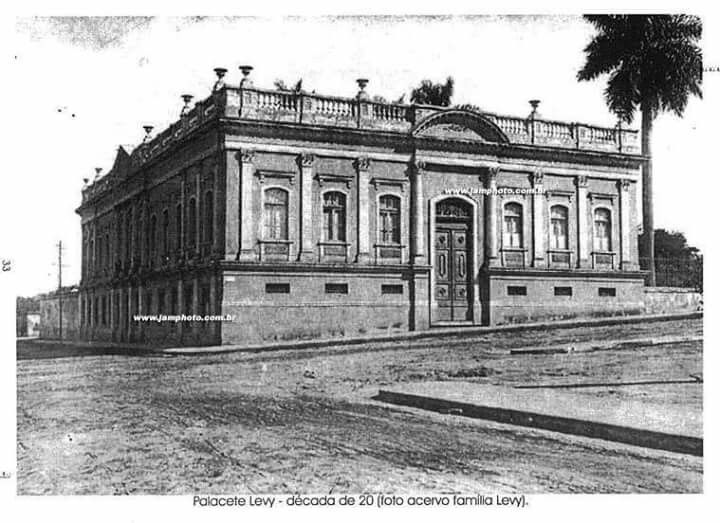

Sobre a cidade
Limeira é uma cidade localizada no interior do estado de São Paulo, conhecida por sua importância histórica, econômica e cultural. Situada a cerca de 150 quilômetros da capital paulista, Limeira tem uma população de aproximadamente 300 mil habitantes, o que a torna uma das cidades de porte médio da região. Seu nome, que remete ao fruto da limoeiro, é uma alusão à abundância dessa planta na região, especialmente no período colonial.
A cidade tem um papel destacado na economia do estado, sendo um polo industrial e comercial. Tradicionalmente, Limeira foi reconhecida pela produção de calçados e acessórios, especialmente no setor de calçados masculinos, o que fez com que ela fosse chamada de "Capital Nacional do Calçado Masculino". Nos últimos anos, a cidade diversificou sua base econômica, com forte presença nas áreas de metalurgia, móveis e agricultura.
Limeira também é uma cidade com forte identidade cultural, possuindo um rico patrimônio histórico e diversas manifestações culturais. O centro histórico da cidade guarda construções de grande valor arquitetônico, como a Igreja de São Benedito e o Museu de História e Arte, que resgatam a memória e a trajetória do município. As festividades também são um ponto alto da cidade, com destaque para a Festa do Peão de Boiadeiro, que reúne milhares de pessoas e é uma das maiores do interior paulista, atraindo turistas de diversas partes do Brasil.
A cidade tem uma boa infraestrutura e é conhecida por suas praças arborizadas, como a Praça Toledo Barros, e por seu clima ameno, com temperaturas que tornam Limeira agradável durante grande parte do ano. A cidade também conta com bons serviços de saúde e educação, além de oferecer opções de lazer, como cinemas, teatros e centros culturais. Limeira é um exemplo de cidade que soube equilibrar tradição e modernidade, mantendo suas raízes e ao mesmo tempo se desenvolvendo e se modernizando. Hoje, é um polo regional com qualidade de vida e infraestrutura, atraindo tanto turistas quanto novos moradores e investidores.